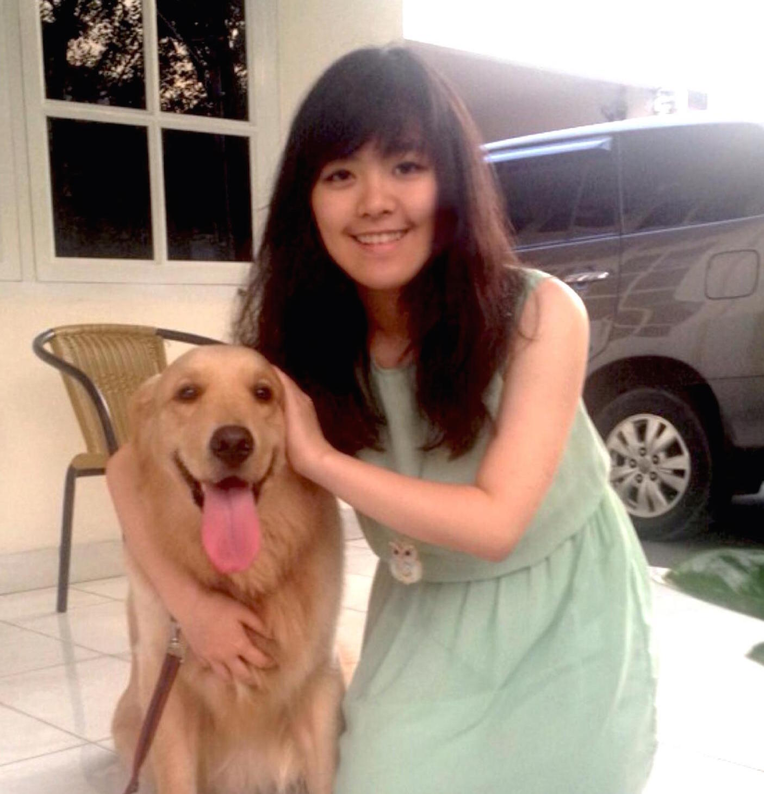
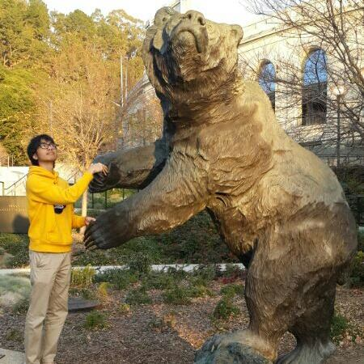

an event by  Designed by Bernardus Billy Tjiptoning
Designed by Bernardus Billy Tjiptoning
Scroll to continue
Scroll to continue
Food Night Market
We do not claim these photos.Bakmi Pangsit
Satay

Batagor
Rendang


Nusantara Coordinator
Gian Wirjawan
BISA President
+1(510)590-0219
BISA President
+1(510)590-0219

William AP
Chief Coordinator
+1(206)673-7357
Chief Coordinator
+1(206)673-7357

Latasha Harahap
Event Organizer
Event Organizer
Nadia Christie
Booth Organizer
Booth Organizer
Marvin Lee
Logistics
Logistics
Felix Saputra
Treasury
Treasury
Hendo Lim
Marketing
Marketing
Ivander Tee
Community Relations
Community Relations
Dhea Suseno
Creative Management
Creative Management
Adriana Salim
Documentation

Documentation
Farandy Ramadhana
BISA Website Coordinator

BISA Website Coordinator
Sponsored By
Special Thanks To: